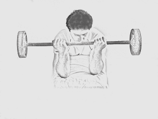

Welcome to Ejercicios efectivos de tríceps
3 ejercicios de tríceps en casa para fortalecer el brazo
2021.06.26 19:32sac@smartfit.com.mx Rutinas Tips Nutrición Promociones Comunidad Smart Fit FAQ’s Menu
3 ejercicios de tríceps en casa para fortalecer el brazo
/ RutinasEl camino para obtener brazos fuertes y firmes debe atravesar por los ejercicios de tríceps en casa. Se trata de un músculo que en ocasiones se deja un poco olvidado pero que sin duda ayuda a eliminar la flacidez en la parte posterior del bíceps o conejo, y con el que lograrás aquella forma de herradura que tanto se busca en esta parte del cuerpo. Aquí revisamos 3 opciones que no deben faltar en un entrenamiento de brazo, hombro o espalda.
Te recomendamos leer: Rutina de gym para bajar de peso: incluye estos ejercicios .
3 Ejercicios de tríceps en casa
1. Fondos en banco
Este es uno de los más populares ejercicios de tríceps en casa, ya que exige una gran cantidad de presión a cada una de las cabezas del músculo y sólo necesitas un banco, una silla o incluso podrás realizarlo en la orilla de la cama.
Preparación
Apoyadas en el banco, silla u orilla de la cama, coloca las palmas de tus manos por detrás de tu espalda y lo más pegadas a los glúteos que puedas Estira totalmente las piernas Mantén los talones pegados al suelo y la punta viendo hacia arribaEjecución
Flexiona tus brazos y baja el cuerpo hasta formar un ángulo de 90 grados entre tus antebrazos y tus tríceps Mantén los codos a la misma altura de las manos, procurando no moverlos hacia afuera Estira los brazos y empuja tu cuerpo hacia arriba hasta llegar a la posición inicial Procura enfocar la fuerza en tus tríceps Asegúrate de mantener la espalda cerca del banco o del objeto que estés usando para maximizar los beneficios del ejercicio2. Copa a dos manos
Para este movimiento necesitas un objeto para agregar peso. Aunque lo ideal es realizarlo con una mancuerna, recuerda que puedes sustituirla con otras alternativas como un botella de agua, una maleta o una bolsa de semillas. Checa las opciones.
Preparación
Colócate de pie con las piernas separadas a la altura de los hombros Sujeta firmemente la mancuerna u objeto de peso con las dos manos y elévalo con los brazos totalmente extendidos sobre tu cabezaEjecución
Flexiona los brazos lentamente, llevando la mancuerna u objeto de peso por atrás de tu nuca Mantén los codos cerrados, es decir, lo más pegados a la cabeza posible y sin echarlos hacia adelante Estira los brazos hacia arriba regresando a la posición inicial Realiza el movimiento lento y controlado3. Patadas de tríceps con mancuernas
El tercero de los ejercicios para triceps en casa que te recomendamos en esta ocasión también requiere el uso de algún objeto de peso como unas mancuernas o botellas de agua.
Preparación
Ponte de pie con las piernas separadas a la altura de los hombros Sujeta una de las mancuernas o los objetos de peso con cada mano Inclina el torso hacia delante y saca la cadera Flexiona levemente las rodillasEjecución
Flexiona un poco los brazos hacia adelante y después estíralos hacia atrás subiendo el objeto de peso en dirección al techo Mantén los codos pegados al cuerpo todo el tiempo Mantén la presión en los tríceps durante el movimiento Realiza los movimientos de forma lenta y controlada, sin balancear los brazosComplementa tus rutinas
Estos ejercicios de tríceps en casa te servirán de forma perfecta para complementar tu rutina para brazos, hombros o espalda. Podrás incorporarlos en una triserie que repetirás entre 3 y 4 veces. Intenta comenzar con 8 repeticiones y de acuerdo al nivel de intensidad que busques y soportes, lo irás incrementando hasta alcanzar los 12 movimientos por bloque. También tendrás la opción de aumentar la carga.
¡Sigue entrenando con Smart Fit, ya falta poco para recibirte en el gym!
Publicado julio 17, 2020 Categorias Rutinas Etiquetas Ejercicios de tríceps , Entrenamiento de brazos AnteriorAprende a realizar estos ejercicios quemagrasa en casa
SiguienteDesplantes con mancuernas: 3 formas de hacerlos más efectivos
Síguenos
SITIO WEB
FACEBOOK
TWITTER
INSTAGRAM
tags
Abdominales Alimentación Alimentación de gym aparatos de gimnasio aperturas Aumentar masa muscular Bajar peso Batidos de proteínas Beneficios de un gimnasio inteligente Cardio Comunidad SmartFit definición muscular Definir Desplantes Dieta en el gym Ejercicios Ejercicios cardiovasculares Ejercicios fitness Ejercicios para abdominales Ejercicio y alimentación Entrenador personal para adelgazar Entrenamiento Entrenamiento cardiovascular Entrenamiento de hipertrofia Entrenamiento fitness Entrenamiento funcional Entrenamiento y alimentación Estilo de vida Estilo de vida activo y saludable Fitness Fitness and wellness Gimnasios gimnasios Smart Fit Hipertrofia muscular Peso Muerto Proteínas Quema de grasa Rutina de ejercicios Rutina HIT rutinas rutinas de entrenamiento Rutinas de espalda Smart Fit Suplementos UnidadesCategorías
Comunidad Smart Fit Nutrición Promociones Rutinas Tips Uncategorized Todos los derechos reservados SmartFit 2016 Rutinas Tips Nutrición Promociones Comunidad Smart Fit FAQ’s